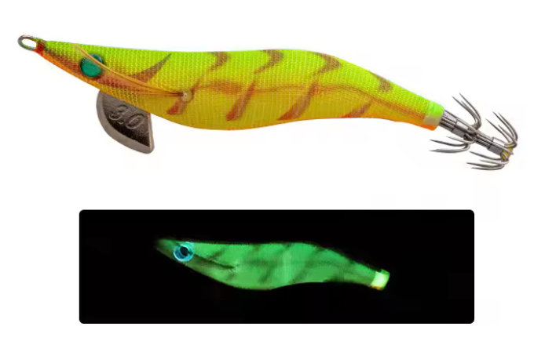

Egis Low Cost
Inicio
Señuelos
YAMASHITA
DTD
YO-ZURI
LETOYO
KINGDOM
SQUID KING
OTROS
Componentes
Color Egis
Acerca de
Yamashita Egi Sutte R/BHT – Análisis completo

⚡ Color Hot Tiger con glow verde intenso, diseñado para máxima visibilidad.
🎨 Características
Color base:
Amarillo chartreuse con barras naranjas tipo tiger, extremadamente visible.
Ojos:
Ojo azul contrastado, punto de ataque muy marcado incluso con poca luz.
Glow:
Glow verde intenso y uniforme en todo el cuerpo.
Serie R:
Sutte reactivo, pensado para provocar ataques por estímulo visual.
Acabado:
Malla textil de alta visibilidad con patrón agresivo.
🌙 Condiciones ideales de uso
🌊
Aguas tomadas o turbias:
Muy alta eficacia.
🌙
Noche cerrada:
Uno de sus escenarios ideales.
🌫️
Mar movida:
El glow permite localizar el egi fácilmente.
🦑
Calamares activos:
Provoca ataques rápidos y decididos.
🧠 Comportamiento esperado
👉 Egi ofensivo, no discreto.
👉 Ideal para comenzar la jornada y “activar” calamares.
👉 Muy efectivo cuando los patrones naturales no funcionan.
👉 Perfecto para alternar con colores más neutros.
⚙️ Resumen práctico
Condición
Eficiencia
🌙🌑 Noche cerrada
🟢🟢 Muy alta
🌊 Aguas tomadas
🟢🟢 Muy alta
🌫️ Mar movida
🟢 Alta
🦑🔥 Calamares activos
🟢🟢 Muy alta
☀️🌊 Agua clara / día
🟡 Media